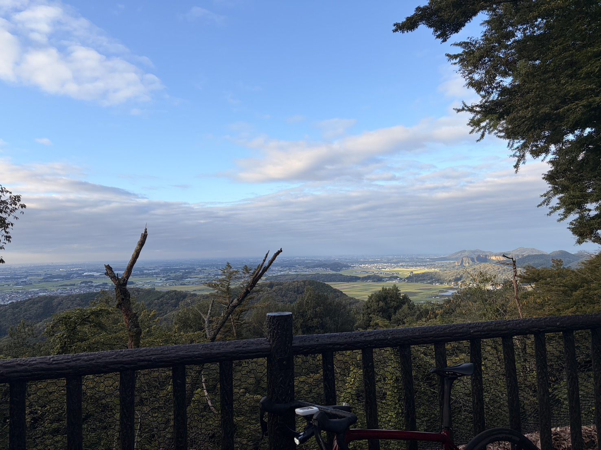

太平山6分49秒・333W。低心拍の答えは、たぶん一つじゃない
昨日のSSTでは、同じくらいのパワーなのに心拍がかなり低く出た。9月11日のSSTでは260Wで最大心拍167bpmまで上がっていたのに、昨日は258Wを20分走って全体の最大が143bpm。
ペダリングが良くなって効率が上がったのか。それとも疲労が溜まって、心拍が上がりにくくなっているのか。数字だけでは判断しづらかったので、今日は外で確認するつもりで太平山へ行ってきた。

今日はいつもより早めにスタート
今日は東京で勉強会があるので、いつもより早い時間にスタート。気温もだいぶ下がっていて、走り出すとキンモクセイの香りがした。もう完全に秋である。
季節の変わり目は気分の上下が出やすいのだが、こういう空気の中を走るのは普通に気持ちいい。
40.60km・NP264W・TSS126.8
- 全体40.60km / 1時間23分13秒 / 獲得488m / 平均気温20.1℃
- 負荷平均209W / NP264W / IF0.959 / TSS126.8
- 心拍・回転平均127bpm / 最大163bpm / 平均86rpm
Garminの判定は「テンポ（高強度有酸素）」。全体としては、かなりしっかり踏んだ日になった。
Garminの判定は「テンポ（高強度有酸素）」。全体としては、しっかり踏んだ日になった。
- 今日6分49.6秒 / 333W / NP338W / 心拍平均147bpm・最大162bpm / 92rpm
- 9月14日6分45.1秒 / 340W / NP342W / 心拍平均152bpm・最大167bpm / 94rpm
今回は約4.5秒遅く、平均パワーは7W低い。数字としては、かなり近いところで走れている。75kg基準で4.4W/kg。
過去の太平山と並べると、6分49.6秒は9月14日に次ぐ2番目の速さで、8月17日の6分58秒より約8秒速い。前回の340Wが、たまたま出た一発ではなかったということでもある。
でも、前回の方が楽だった
ここが今日いちばん気になったところ。前回の太平山は340W出ていたのに、本人の感覚としてはかなり楽だった。呼吸にも余裕があり、ペダリングも自然にハマっている感じ。
それに対して今日は333W。数値だけ見ればほぼ同じなのに、体感としては前回の方が明らかに楽だった。つまり「心拍が低い＝今日は前回より効率が良かった」とは、単純に言えなさそうである。
心拍は5bpm低い。ただし気温が7℃違う
今日の太平山は平均心拍147bpm、最大162bpm。前回は平均152bpm、最大167bpm。どちらも約5bpm低い。
ただ、今日の平均気温は20.1℃で、前回は27℃台。約7℃違う。この差を考えると、同じくらいのパワーでも心拍が数bpm低くなるのは普通にありそうだ。
昨日のSSTで心拍がかなり低かったので「疲労で心拍が上がらなくなっているのでは」とも考えていた。でも今日は最大163bpmまで上がっている。少なくとも「心拍そのものが上がらなくなっている」という感じではなさそうである。
ペダリング改善の可能性は残る
一方で、ペダリングの感覚についてはまだ気になる。前回の太平山では、ペダリング中に前ももを一瞬だけ自然に連動させると、頑張っていないのによく進む感じがあった。昨日のローラーでも、重心のかけ方を少し変えたら回し方がスムーズになった感覚があった。
今日も333Wで6分49秒。つまり、今のところの整理はこのくらいである。
- 言えなさそうなこと心拍が低かった理由を、全部ペダリング改善で説明する
- 残っていることペダリングが良くなっている可能性は、まだ十分ある
後半も普通に踏めた
- 太平山のあと9分23秒 / 293W
- 信号待ちのあと7分04秒 / 313W
太平山を登って終わりではない。後半にもこの2本があった。信号待ちを挟んでいるので連続した1本として見るものではないが、それでもその後に313Wで7分踏めている。全体NP264W、IF0.959、TSS126.8。少なくとも、出力能力が大きく落ちている感じはない。
今日やってみて思ったこと
昨日までは「心拍が低い＝効率が上がった？」「それとも疲労？」と考えていた。今日の太平山を走ってみると、少し見え方が変わった。心拍は前回より低かった。でも体感は前回の方が楽。そして今日は最大163bpmまで普通に上がった。
なので昨日の低心拍は、疲労だけでもないし、ペダリング改善だけでもない。気温やその日の状態、ローラー環境も含めて、いくつかの要因が重なった可能性が高そうである。
今日は朝のキンモクセイも含めて、かなり秋らしいライドだった。
次に見るポイント
- 同じ出力で250〜255Wのとき、心拍がどう動くか
- 太平山333〜340W前後を再現できるか
- ペダリング重心のかけ方を変えたスムーズさが続くか
- 体感と心拍きつさの感覚と心拍が一致するか
- 気温気温が違う日に、どれくらい心拍差が出るか
しばらくは「心拍が低いから良い」「心拍が高いから悪い」とは考えず、パワー、心拍、体感、気分をセットで見ていく。